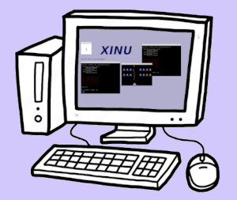
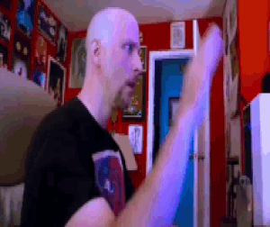

Xinu Visual Interface for the x86/amd64 platform PC
(a little collaborative project between Purdue and
UNCo students)


Goals
This project aims to add an extension to the Xinu Operating System, whose purpose is to provide a visual interface to the OS, running on current PC platform.
A second goal is be able to run Xinu OS on REAL notebooks and PCs (no just on QEMU, virtualbox, whatever hypervisor).
Draft code working
What we have - What we need
Official Xinu runs on x86 Galileo boards, ARM Beagleboard board, and VMs (virtualbox, qemu, tec)
We have a qemu/PC initial Xinu OS with draft drivers for GUI
We need some extra pieces to complete the goals
The system will consist of a few new drivers (vga, keyboard, mouse, vtty).
Also a GUI layer, which controls the windows for different processes running on the visual interface.
Finally, we need a killer app to test everything. Maybe, that "hello world" application, which could have the role of "system testing" or "validation testing", is a virtual terminal where the Xinu Shell runs without any modification.